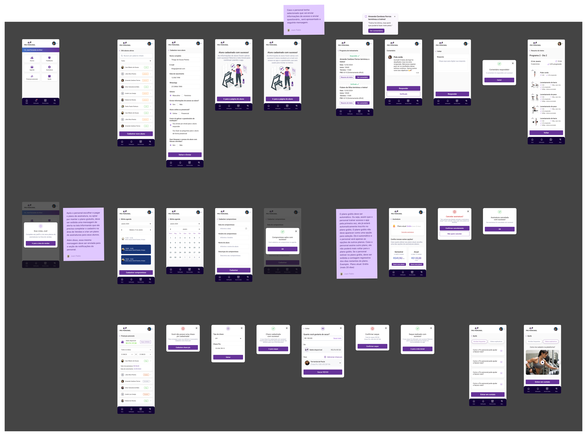

Developer EmpathyPro Personal · Telas do Protótipo & Camada de Handoff
119 Telas Desdobradas
NavBarProtótipo Dedicada
20+ Sticky Notes de Lógica

Handoff em Altura Total
Destravando a Inspeção da Engenharia
Quando o desenvolvedor Bubble relatou que viewports fixos travavam a inspeção vertical, todas as 119 telas foram desdobradas manualmente em altura total em uma prancha dedicada.